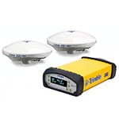
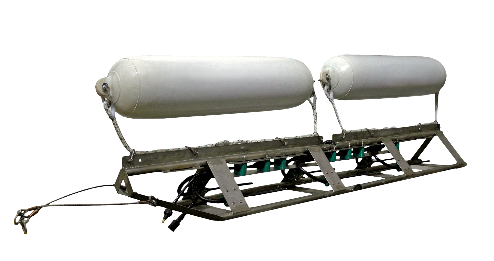

Survey Equipment & Technology Standards
PT. OC ENVIRO is committed to selecting the right technology and instrumentation for every specific marine task. We offer a comprehensive suite of advanced marine survey equipment designed to obtain optimum, high-accuracy data at maximum operational efficiency.
- ✓ Hydrographic & Bathymetric Survey
- ✓ Global Positioning & Navigation Systems
- ✓ Geotechnical & Soil Investigation
- ✓ Seismic & Sub-surface Investigation
- ✓ Metocean & Water Sampling Measurement
Primary Instrument

Singlebeam & Multibeam Echosounder System
Advanced high-resolution bathymetric surveying instrument combining singlebeam and multibeam sonar technology for comprehensive seafloor mapping and high-density data acquisition.
- Primary Use: High-Density Seabed Bathymetric Mapping
- Feature: Multi-frequency & wide swath coverage
- Application: Port dredging, navigation & offshore construction

Dual-Frequency DGPS & GNSS Receiver
High-precision GNSS positioning system providing sub-meter to centimeter accuracy for marine vessel tracking and hydrographic survey lines.
- Primary Use: Vessel Positioning & Navigation
- Accuracy: RTK / DGPS High Precision
- Feature: Multi-constellation satellite tracking

Offshore Geotechnical Drilling & CPT Rig
Heavy-duty marine drilling and Cone Penetration Testing (CPT) equipment utilized for offshore soil sampling, core drilling, and evaluating seabed sub-surface geotechnical parameters.
- Primary Use: Sub-surface Soil Sampling & Testing
- Feature: Deep-water drilling & undisturbed coring
- Application: Offshore platform foundation & jetty design

Acoustic Doppler Current Profiler (ADCP)
Advanced acoustic current meter designed to measure water current velocity and direction across multiple depth columns in ocean waters.
- Primary Use: Current Speed & Direction Profiling
- Deployment: Vessel-mounted or Seabed frame
- Application: Metocean studies & port engineering

Sub-Bottom Profiler (SBP) System
High-resolution seismic reflection system used to identify sub-seabed geological layers, buried pipeline paths, and foundation strata.
- Primary Use: Sub-seabed Stratigraphy Mapping
- Penetration: High resolution sub-bottom profiling
- Application: Offshore pipeline & foundation site survey

Marine Water Sampling Equipment
Professional oceanographic water samplers designed to retrieve clean water samples at discrete depths for marine environmental baseline studies and water quality laboratory testing.
- Primary Use: Discrete Depth Water Sample Collection
- Feature: Contamination-free closing mechanism
- Application: Environmental Baseline Studies & Water Quality Analysis